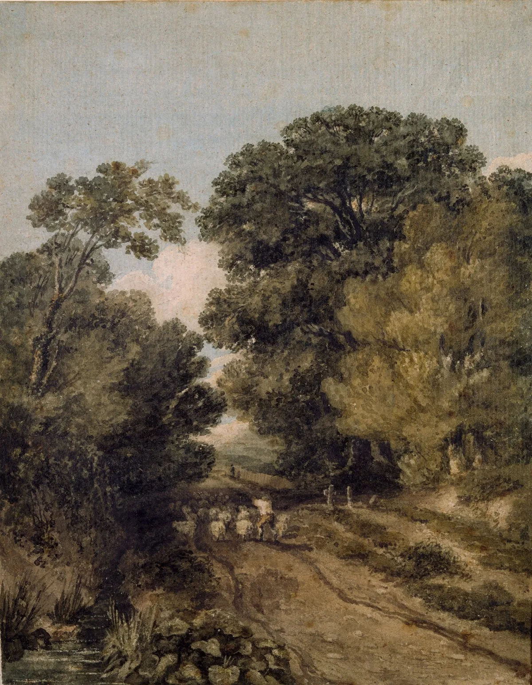
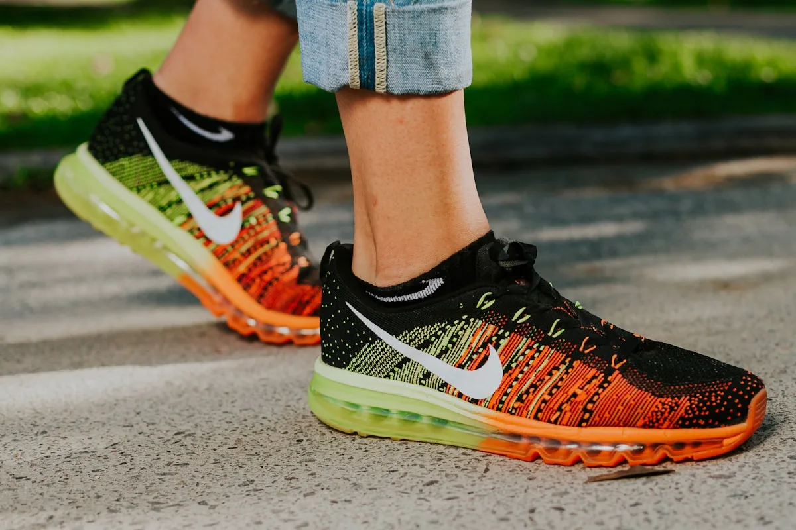
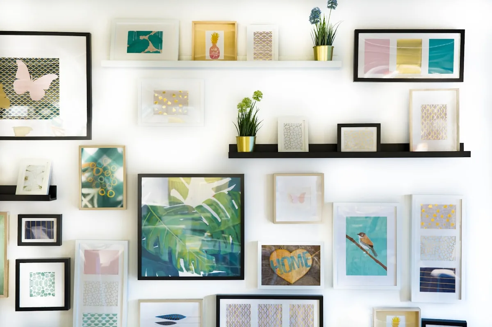

Selection & Sourcing
Twice yearly, our sculptors travel to river sources across Europe and Asia. We walk shallow banks, handle hundreds of specimens, and select only those with exceptional character — particular density, strata pattern, or a surface narrative that speaks.
Selection criteria are rigorously geological: mineral composition, grain orientation, weathering history, and structural integrity are all assessed before a stone is accepted into the atelier's inventory.

Rest & Assessment
Selected stones dry for a minimum of six weeks in our outdoor stone garden. We observe how they change as moisture leaves, how light plays differently across the surface at dawn and dusk, and how the stone's character reveals itself in stillness.
Only after this observation period does a sculptor choose which stone they will work with. The matching of sculptor to stone is considered one of the most important decisions in the process.

Shaping
Hand tools exclusively. We remove as little material as necessary, working always with the grain lines laid down by the river over millennia. Diamond hand-files, chisels ground to specific angles, and custom-made rakes are our primary instruments.
No power tools are used until the finishing stage, and even then, only water-fed grinding wheels that replicate the action of the river itself.

Finishing
The final polish is applied with progressively finer Japanese water stones — the same tradition used in Japanese sword polishing. This stage can take from three days to three weeks depending on the desired surface quality.
Some works receive a final wax treatment with beeswax from the Dordogne Valley's apiary. Others are left completely natural, allowing the stone to develop its own patina over time in the collector's home.
